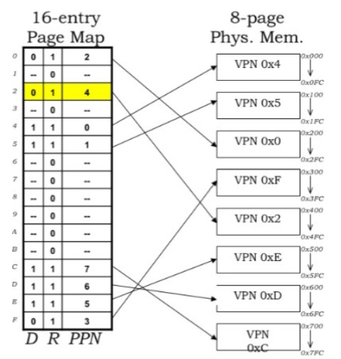
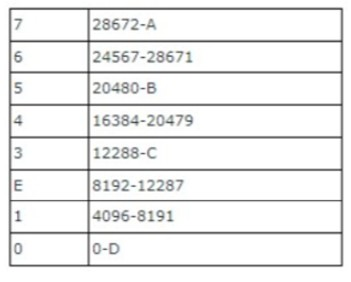
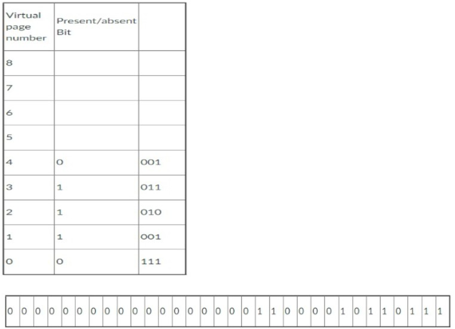
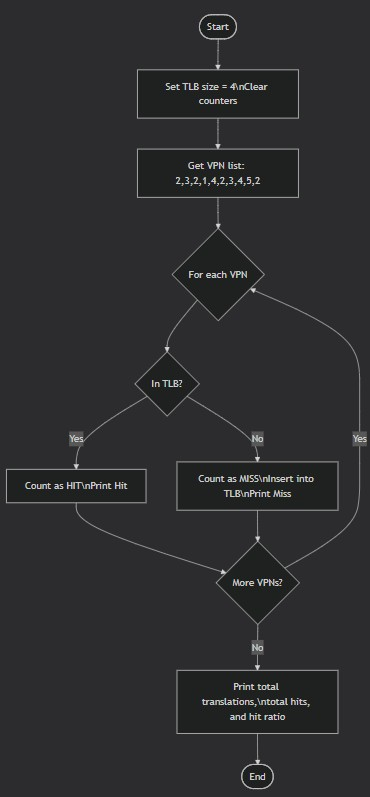
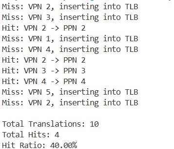

Full Name: ABDULRAHMAN MAZEN HASSAN
Student ID: 202503876
I completed memory management tasks including virtual memory, paging, page tables, and TLB simulation using C#. I calculated virtual/physical page numbers and offsets, determined page frame values, and simulated TLB hits/misses with hit ratio tracking. I also worked on memory interfacing using decoders and combined address patterns to read/write specific memory locations.
(i) Virtual Pages and Bytes per Page: With a 4-bit virtual page number (VPN), the number of virtual pages is 2^4=16. Bytes per page: With an 8-bit offset, the page size is 2^8=256 bytes.
(ii) Address Translation Example: Next figure illustrates 16 virtual pages mapped to 8 physical pages. A load instruction references the virtual address 0x2C8. We need to determine the VPN, offset, and the corresponding physical page number (PPN).

Step 1 – Convert to binary: 0x2C8 = 0010 1100 1000_2 (0x2 → 0010, 0xC → 1100, 0x8 → 1000)
Step 2 – Extract VPN and offset: VPN: The top 4 bits 0010 → VPN = 0x2. Offset: The bottom 8 bits 1100 1000 → Offset = 0xC8
Step 3 – Find PPN: Using the page map in Figure 40, VPN 0x2 maps to PPN 0x4.

Each page frame is 4096 bytes (4 KB). The end address is calculated as: "End address" = "Start address" + 4095
D: Frame 0 starts at 0 → End = 0 + 4095 = 4095
C: Frame 3 starts at 12288 → End = 12288 + 4095 = 16383
B: Frame 5 starts at 20480 → End = 20480 + 4095 = 24575
A: Frame 7 starts at 28672 → End = 28672 + 4095 = 32767
a. What is the virtual page being referenced? From Figure 41, the first 20 bits of the virtual address are: 00000000000000000001. In decimal: 1. The referenced virtual page is 1.
b. Page frame value (in both binary and denary): For Virtual Page Number 1, the page table indicates: Present/Absent bit = 1 (page is present). Page frame bits = 001. Thus, the page frame value is: Binary: 001, Decimal: 1.
c. Construct the physical address: The physical address is formed by concatenating: The page frame bits from 2.b (001) and the offset bits (the last 12 bits of the virtual address). Resulting physical address: 001100001011011

(i) Pages in physical memory: Physical Memory Size / Page Size = (2^24 Bytes) / (2^10 Bytes/page) = 2^14 pages = 16,384 pages
(ii) Entries in the page table: Virtual Memory Size / Page Size = (2^32 Bytes) / (2^10 Bytes/page) = 2^22 entries = 4,194,304 entries
(iii) Bits per entry in page table: PPN bits + Control bits = 14 bits + 2 bits = 16 bits (or 2 bytes)
(iv) Pages occupied by page table: Total Page Table Size = 2^22 × 16 bits/entry = 2^23 bytes. (2^23 Bytes) / (2^10 Bytes/page) = 2^13 pages = 8,192 pages


5.1 Address Decoding: The memory contains 14 locations (indices 0 to D in hexadecimal). To address all locations: Address bits = ⌈log₂(14)⌉ = 4 bits since 2^4 = 16 ≥ 14.
Decoder Configuration: Maps 4-bit address inputs to 16 chip select lines (CS0 – CS15). Only 14 outputs (CS0 – CS13) are used.
Data Path: Each memory location stores 4 hexadecimal digits: Data width = 4 digits × 4 bits/digit = 16 bits.
Control Signals: WR – Active-low write enable, RD – Active-low read enable, EN – Global memory enable.
5.2 Pattern format (active HIGH): WR RD EN A3 A2 A1 A0. Target: Read content FEAD. Location: FEAD is at Index A. Index A (hex) → Binary 1010 for A3 A2 A1 A0.
Setting bits for "Read Index A": WR = 0, RD = 1, EN = 1, A3 A2 A1 A0 = 1 0 1 0. Combined address (WR RD EN A3 A2 A1 A0): 0111010. Hexadecimal result: 0x3A.